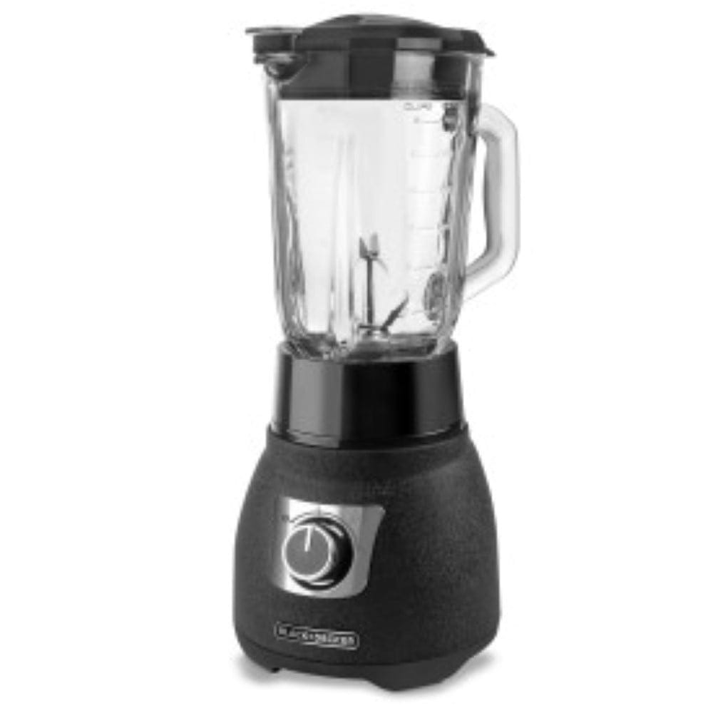
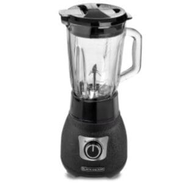
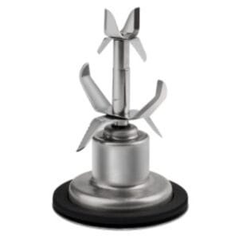
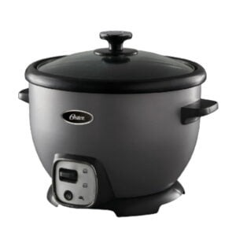
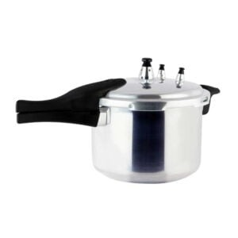

Black+Decker · Modelo BL1670S
El modelo BL1670S de Black+Decker está pensado para un uso práctico y funcional. Entre sus características destacan Microphones; Sound Systems; Sound Tower; Speaker Stands.
| Modelo | BL1670S |
|---|---|
| Marca | Black+Decker |
| Brand | Black & Decker |
Fuente principal: https://atbiz.co/product/blackdecker-cyclone-1000-watt-blender-bl1670s/